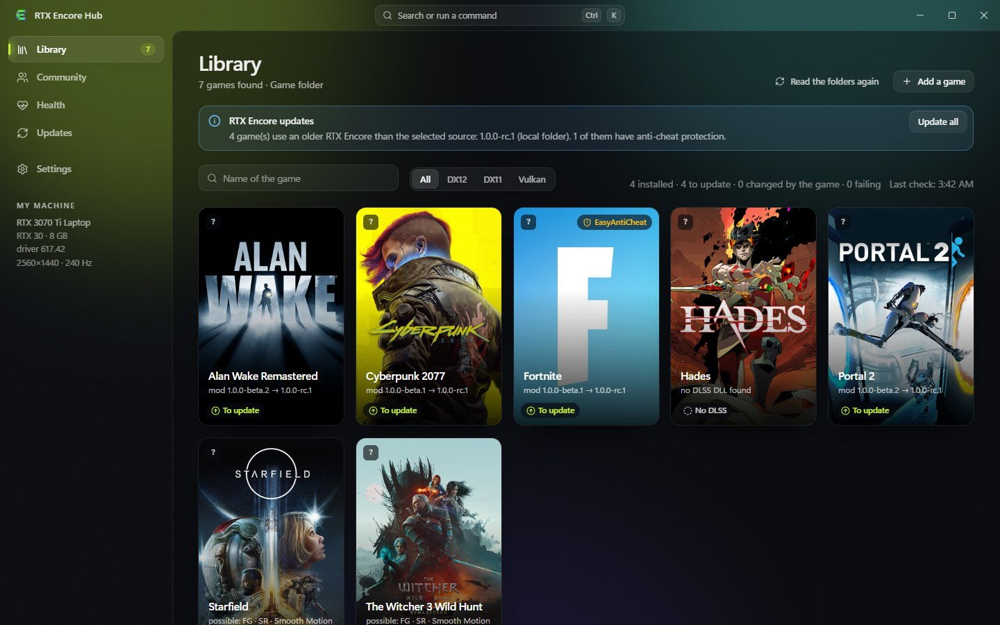
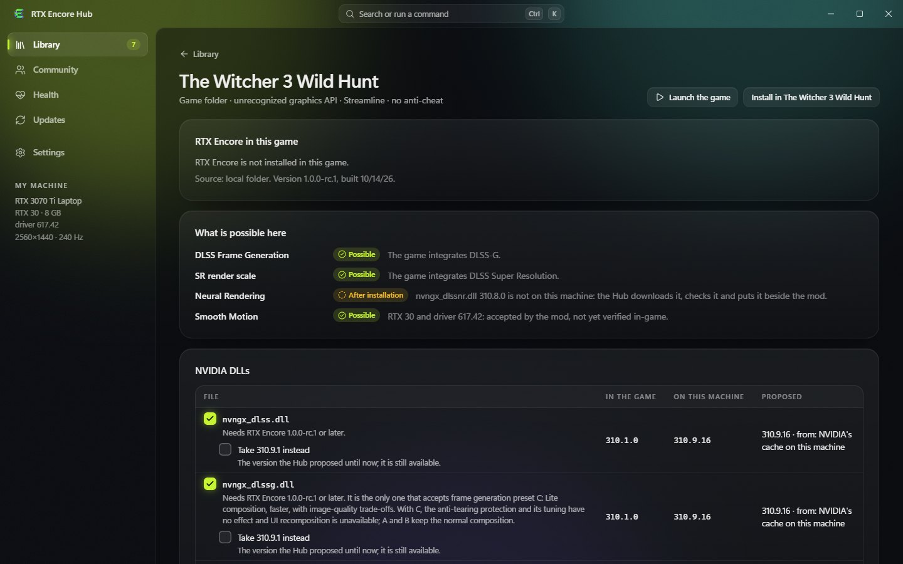
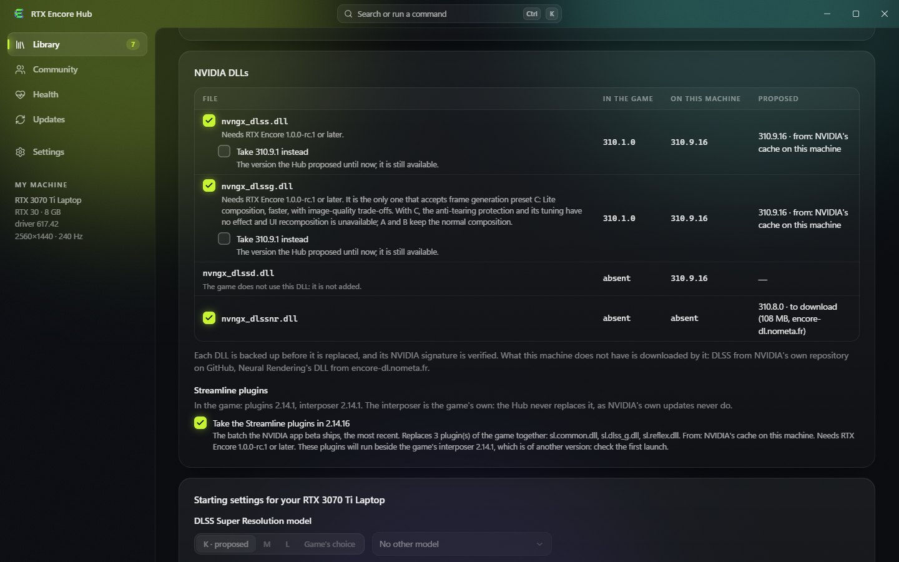

Your library. Your installs. Your way back.
The Windows companion for RTX Encore. It finds your games, installs the mod with the NVIDIA files it needs, keeps all of it up to date, and can always put a game back as it was.
Windows 10 and 11, x64 · English, French and Simplified Chinese · installs without administrator rights

Real application capture, on a demonstration library of stand-in game folders.
Why use the Hub rather than copy files by hand
Installing a mod in several games means finding folders, checking DLL versions, keeping backups and remembering what needs updating. The Hub does it for you, and shows what it will do before it does it.
nvngx_dlssnr.dll 310.8.0, the exact build the mod requires, is downloaded, verified and put beside the mod.What it does
One game library
The games of Steam, Epic and GOG, the folders you add, or a single game by its executable. Each tile says where the game stands: not installed, installed, to update, changed by the game, failing.
A page for every game
What RTX Encore can do there on your card and driver, frame generation, DLSS render scale, Smooth Motion, Neural Rendering, and why.
The right NVIDIA files
The most recent DLSS and Streamline versions the game's RTX Encore admits, from what your machine already has or from a download. A DLL is accepted only with a valid NVIDIA signature.
Chosen once for every game
Pick the versions of DLSS and Streamline and your DLSS presets once in Settings. What you untick in one game stays left alone there.
Install with a way back
The plan is shown before anything is written, written whole or not at all, and an interrupted install is undone. Administrator rights only where a folder needs them.
Updates
The releases of RTX Encore with their notes, one game or all of them. The Hub looks for its own new version; updates are signed.
Settings
A form for rtx-encore.jsonc, named sets of settings per game, starting settings for your card, and the DLSS Super Resolution model in the driver profile.
Health and backups
Start the game, watch its first minute, and list every state the game can be put back to.
Look before you install
What the Hub says of a game is deduced from its files, your card and your driver. It is not a certification that a feature works in that game, and it measures no performance.


Get started
- Download
RTX-Encore-Hub-Setup-<version>.exefrom the releases and run it. It installs for your account only. - Open Library. Steam, Epic and GOG games are there; add other folders under Settings.
- Open a game's page, read what is possible there, and press Install. The plan lists every file before anything is written.
- Under Health, Launch and verify starts the game and tells you how its first minute went.
- When a new RTX Encore is out, Update all in the library updates every game.